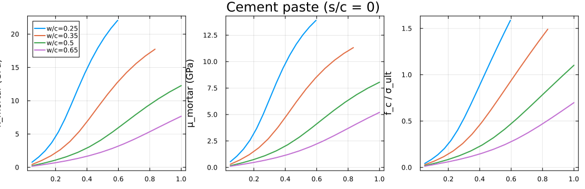
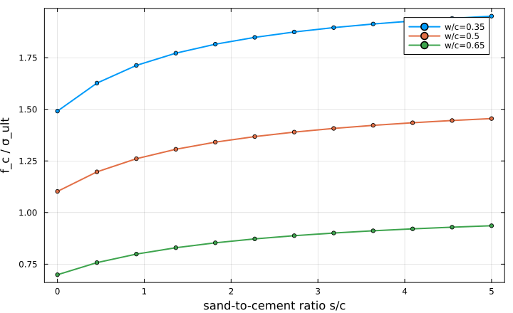

Quasi-brittle strength of cement paste and mortar
This chapter implements the multi-scale strength-upscaling model of [47] — and mirrors the corresponding chapter of the Echoes book [42]. It predicts the macroscopic uniaxial compressive strength $f_c$ of a mortar from the strength of a single hydrate phase, by upscaling through three nested homogenization scales.
| Scale | RVE | Phases | Scheme |
|---|---|---|---|
| 1 | Hydrate foam (HF) | oriented hydrate needles + water + air | Self-Consistent |
| 2 | Cement paste (CP) | HF matrix + clinker grains | Mori-Tanaka |
| 3 | Mortar (MO) | CP matrix + sand grains | Mori-Tanaka |
The strength criterion needs $\partial \mathbb C^{\rm hom}_{MO}/\partial \mu_{\rm hyd}$ — the sensitivity of the mortar stiffness to the hydrate shear modulus, propagated through all three scales. In Echoes this is assembled by an explicit chain rule over the five transversely-isotropic parameters of each intermediate tensor (homogenize_derivative per index, per scale). In MeanFieldHom the same quantity is a single ForwardDiff pass through the entire nested chain (multi-bin SC + two MT stages): making the θ = 0 family's shear modulus a Dual and reading the partial of the final C_mo gives value and derivative at once. The two routes agree to the validation tolerances of scripts/bench_echoes/benchmark_pichler.jl (moduli within 1 %, $f_c$ within 2 %).
The code below is the model of scripts/common/pichler_model.jl, reproduced inline.
Constants and volume fractions
Densities (relative to water) and phase moduli are those of [47]. Powers' hydration model gives the volume fractions of clinker, water, hydrates and air as functions of $w/c$ and the hydration degree $\alpha$ ($\alpha_{\max} = \min(1, w/c / 0.42)$); the sand fraction follows from the sand-to-cement ratio $s/c$.
using MeanFieldHom
using TensND
using ForwardDiff
using LinearAlgebra
using Plots
gr() # headless backend; GKSwstype is set to "100" in make.jl
const d_clin, d_hyd, d_san = 3.15, 2.073, 2.648
const K_clin, μ_clin = 116.7, 53.8
const K_hyd_ref, μ_hyd_ref = 18.7, 11.8
const K_san, μ_san = 37.8, 44.3
# Water/air are regularized to a tiny positive stiffness: it selects the
# percolating SC branch and keeps the iteration smooth (deliberate deviation
# from the exact zero — the source of the ~2% f_c gap with Echoes).
const TINY = 1.0e-3
const NTHETA = 20
const ω_aspect = 1.0e4
f_clin(wc, α) = (1 - α) / (1 + d_clin * wc)
f_w(wc, α) = d_clin * (wc - 0.42α) / (1 + d_clin * wc)
f_hyd(wc, α) = 1.42 * d_clin / d_hyd * α / (1 + d_clin * wc)
fh_san(wc, sc) = sc / d_san / (1 / d_clin + wc + sc / d_san)
αmax(wc) = min(1.0, wc / 0.42)Scale 1 — hydrate foam (multi-bin self-consistent)
The hydrate crystals are near-perfect needles (prolate spheroids, $\omega = 10^4$) with a random orientation distribution. The distribution is discretized into NTHETA polar bins (polar_orientation_bins); each bin is one Spheroid family tilted by its polar angle and carrying a TISymmetrize — the exact azimuthal average about the global axis $e_z$, preserving the non-major-symmetric content of the concentration tensors. The foam (needles + water + air) is homogenized self-consistently. The shear modulus of the first family ($\theta = 0$) is kept as a separate argument μ_b0 so it can later be seeded with a ForwardDiff.Dual.
function build_hf(wc, α_p, μ_b0; N = NTHETA, ω = ω_aspect)
fclin, fw, fhyd = f_clin(wc, α_p), f_w(wc, α_p), f_hyd(wc, α_p)
fair = max(0.0, 1 - fclin - fw - fhyd)
fthyd, ftw, ftair = fhyd / (1 - fclin), fw / (1 - fclin), fair / (1 - fclin)
T = typeof(μ_b0)
ez = (0.0, 0.0, 1.0)
rve = RVE(:M; T = T)
# Zero-volume matrix = SC seed only (Σ inclusion fractions = 1).
add_matrix!(
rve, Ellipsoid(1.0),
Dict(:C => TensISO{3}(convert(T, 3K_hyd_ref), convert(T, 2μ_hyd_ref)));
symmetrize = :iso
)
for (i, bin) in enumerate(polar_orientation_bins(N))
μ_h = i == 1 ? μ_b0 : convert(T, μ_hyd_ref)
add_phase!(
rve, Symbol(:HYD, i),
Spheroid(ω; euler_angles = (bin.θ, 0.0, 0.0)),
Dict(:C => TensISO{3}(convert(T, 3K_hyd_ref), 2μ_h));
fraction = fthyd * bin.weight, symmetrize = TISymmetrize(ez)
)
end
C_tiny = TensISO{3}(convert(T, 3TINY), convert(T, 2TINY))
add_phase!(rve, :W, Ellipsoid(1.0), Dict(:C => C_tiny); fraction = ftw, symmetrize = :iso)
add_phase!(rve, :AIR, Ellipsoid(1.0), Dict(:C => C_tiny); fraction = ftair, symmetrize = :iso)
return homogenize(
rve, SelfConsistent(; abstol = 1.0e-8, maxiters = 1000, damping = 0.5),
:C; select_best = true
)
endScales 2 and 3 — cement paste and mortar (Mori-Tanaka)
The converged foam is a TensTI{4}; best_fit_ti extracts its physical 5-parameter TI stiffness (Echoes does the same with tensor(C_hf.array, TI)) before the two Mori-Tanaka stages: clinker grains in the foam matrix (CP), then sand grains in the paste matrix (MO).
function build_cp(wc, α_p, C_hf)
T = eltype(C_hf)
rve = RVE(:HF; T = T)
add_matrix!(rve, Ellipsoid(1.0), Dict(:C => C_hf))
add_phase!(
rve, :CLIN, Ellipsoid(1.0),
Dict(:C => TensISO{3}(convert(T, 3K_clin), convert(T, 2μ_clin)));
fraction = f_clin(wc, α_p)
)
return homogenize(rve, MoriTanaka(), :C)
end
function build_mo(wc, sc, C_cp)
T = eltype(C_cp)
rve = RVE(:CP; T = T)
add_matrix!(rve, Ellipsoid(1.0), Dict(:C => C_cp))
add_phase!(
rve, :SAN, Ellipsoid(1.0),
Dict(:C => TensISO{3}(convert(T, 3K_san), convert(T, 2μ_san)));
fraction = fh_san(wc, sc)
)
return homogenize(rve, MoriTanaka(), :C)
end
# Full chain: scalar μ_b0 in, C_mo array out.
function multiscale_C_mo(wc, α_p, sc, μ_b0; N = NTHETA, ω = ω_aspect)
C_hf = best_fit_ti(build_hf(wc, α_p, μ_b0; N = N, ω = ω), (0.0, 0.0, 1.0))
C_cp = build_cp(wc, α_p, C_hf)
C_mo = build_mo(wc, sc, C_cp)
return get_array(C_mo)
endStrength criterion and the autodiff sensitivity
The compliance pull-back $\mathbf M = \mathbf S_{MO}:\partial\mathbb C_{MO}/\partial\mu_{\rm hyd}:\mathbf S_{MO}$ gives the axial term $M_{3333}$, and [47]'s criterion reads
\[\frac{f_c}{\sigma^{\rm ult}_{\rm hyd}} = \frac{1}{\sqrt{\,M_{3333}\,2\mu_{\rm hyd}^2 / f_\theta\,}},\]
where $f_\theta$ is the mortar volume fraction of the perturbed ($\theta=0$) hydrate family. The sensitivity $\partial\mathbb C_{MO}/\partial\mu_{\rm hyd}$ is obtained by seeding $\mu_{b0}$ with a Dual and reading the partial of the final array — one pass through the whole three-scale chain.
extract_kμ(arr) = k_mu(TensND.proj_tens(Val(:ISO), arr)[1])
function pichler_strength(arr_C_mo, arr_dC, μh, f_θ)
# `arr_C_mo` (value) and `arr_dC` (∂/∂μ) are 3×3×3×3 arrays; wrap them as
# `Tens` and use intrinsic TensND algebra — the effective compliance is the
# full inverse and the pull-back is one double contraction, no index loops.
S = inv(Tens(arr_C_mo))
M = S ⊡ Tens(arr_dC) ⊡ S
return 1 / sqrt(abs(M[3, 3, 3, 3]) * 2μh^2 / f_θ)
end
function compute_point(wc, α_p; sc = 0.0, N = NTHETA, ω = ω_aspect)
TagT = typeof(ForwardDiff.Tag(multiscale_C_mo, Float64))
μ_dual = ForwardDiff.Dual{TagT}(float(μ_hyd_ref), 1.0)
arr = multiscale_C_mo(wc, α_p, sc, μ_dual; N = N, ω = ω)
arr_C = ForwardDiff.value.(arr)
arr_dC = ForwardDiff.partials.(arr, 1)
K_mo, μ_mo = extract_kμ(arr_C)
E_mo, _ = E_nu(iso_stiffness(K_mo, μ_mo))
f_θ = f_hyd(wc, α_p) * (1 - fh_san(wc, sc)) * polar_orientation_bins(N)[1].weight
# criterion uses the iso parameter 2μ: d/d(2μ) = (1/2) d/dμ
fc = pichler_strength(arr_C, arr_dC ./ 2, μ_hyd_ref, f_θ)
return (; K_mo, μ_mo, E_mo, fc)
end
r = compute_point(0.5, αmax(0.5) * (1 - 1e-12))
(k = round(r.K_mo, digits = 3), μ = round(r.μ_mo, digits = 3),
E = round(r.E_mo, digits = 2), fc = round(r.fc, digits = 4))(k = 12.27, μ = 8.055, E = 19.83, fc = 1.1024)The rest of the chapter uses this single-pass sensitivity throughout. The following section is a pedagogical aside — it opens the black box to show what that one autodiff pass computes internally, and how it relates to the explicit chain rule of the original Echoes implementation. It is not needed to run the model.
Under the hood: the multi-scale chain rule made explicit
The sensitivity $\partial\mathbb C_{MO}/\partial\mu_{\rm hyd}$ spans three homogenization scales. There are two ways to obtain it, and they are mathematically identical:
- Direct (used above) — seed $\mu_{\rm hyd}$ as a
ForwardDiff.Dualand let it propagate through the entire nested chainbuild_hf → build_cp → build_moin one evaluation. The chain rule happens automatically inside the dual-number arithmetic; you write no derivatives by hand. - Explicit chain rule (this section, the Echoes approach) — differentiate each scale separately with respect to its input tensor, then multiply the per-scale Jacobians. Echoes assembles exactly this product with one
homogenize_derivativecall per transversely-isotropic (TI) parameter, per scale.
The explicit route is more work, but it makes the structure visible — and it reveals a key fact: because every intermediate stiffness is transversely isotropic (aligned needles in an isotropic matrix, then spherical clinker and sand), only five numbers — the TI parameters — flow between scales.
The bridge between the two views is the TI parameterization: extract the five parameters of a tensor with best_fit_ti, and rebuild a TensTI from five numbers.
const ez = (0.0, 0.0, 1.0)
ti5(C) = collect(TensND.get_data(best_fit_ti(C, ez))) # tensor → 5 TI params
function rebuildTI(p) # 5 params → TensTI
T = eltype(p)
return TensTI{4, T, 5}((p[1], p[2], p[3], p[4], p[5]),
(T(ez[1]), T(ez[2]), T(ez[3])))
endNow the three per-scale Jacobians, each a small ForwardDiff problem in the 5-parameter space rather than a pass through the whole model:
wc, α, sc = 0.5, αmax(0.5) * (1 - 1e-9), 0.0
# Scale 1 — how the five HF parameters respond to μ_hyd (5-vector)
p_hf0 = ti5(build_hf(wc, α, μ_hyd_ref))
dHF_dμ = ForwardDiff.derivative(μ -> ti5(build_hf(wc, α, μ)), float(μ_hyd_ref))
# Scale 2 — how the CP parameters respond to the HF parameters (5×5)
p_cp0 = ti5(build_cp(wc, α, rebuildTI(p_hf0)))
J_cp = ForwardDiff.jacobian(p -> ti5(build_cp(wc, α, rebuildTI(p))), p_hf0)
# Scale 3 — how the full mortar stiffness responds to the CP parameters (81×5)
J_mo = ForwardDiff.jacobian(p -> vec(get_array(build_mo(wc, sc, rebuildTI(p)))), p_cp0)
(size_dHF_dμ = size(dHF_dμ), size_J_cp = size(J_cp), size_J_mo = size(J_mo))(size_dHF_dμ = (5,), size_J_cp = (5, 5), size_J_mo = (81, 5))The chain rule is now literally a product of these Jacobians — $\partial\mathbb C_{MO}/\partial\mu = J_{MO}\,J_{CP}\,\partial\mathbb C_{HF}/\partial\mu$ — and it reproduces the single-pass result to machine precision:
dCmo_chain = reshape(J_mo * (J_cp * dHF_dμ), 3, 3, 3, 3)
# same quantity, straight from one Dual pass through the whole chain
TagT = typeof(ForwardDiff.Tag(multiscale_C_mo, Float64))
μ_dual = ForwardDiff.Dual{TagT}(float(μ_hyd_ref), 1.0)
dCmo_direct = ForwardDiff.partials.(multiscale_C_mo(wc, α, sc, μ_dual), 1)
maxdiff = maximum(abs, dCmo_chain .- dCmo_direct)
println("max |chain rule − direct pass| = ", round(maxdiff, sigdigits = 3))max |chain rule − direct pass| = 7.37e-18Both routes give the same numbers, but the explicit chain rule requires you to (i) know the intermediate symmetry to parameterize it, (ii) choose a consistent parameter ordering, and (iii) assemble the Jacobian product by hand — three opportunities for error that grow with the number of scales. The single ForwardDiff pass needs none of that: it differentiates whatever the model actually computes. The chain rule is invaluable for understanding; the direct pass is what you ship.
Results — strength and stiffness vs hydration degree
For pure cement paste ($s/c = 0$), the effective bulk and shear moduli and the normalized compressive strength $f_c/\sigma^{\rm ult}_{\rm hyd}$ all rise monotonically with hydration and fall with $w/c$ — the trend reported by [47].
wc_list = (0.25, 0.35, 0.5, 0.65)
pk = plot(; xlabel = "α", ylabel = "k_mortar (GPa)", legend = :topleft, framestyle = :box)
pμ = plot(; xlabel = "α", ylabel = "μ_mortar (GPa)", legend = false, framestyle = :box)
pfc = plot(; xlabel = "α", ylabel = "f_c / σ_ult", legend = false, framestyle = :box)
for wc in wc_list
αs = range(0.05, αmax(wc) * (1 - 1e-9); length = 14)
ks, μs, fcs, ak = Float64[], Float64[], Float64[], Float64[]
for α in αs
try
r = compute_point(wc, α)
push!(ak, α); push!(ks, r.K_mo); push!(μs, r.μ_mo); push!(fcs, r.fc)
catch
end
end
plot!(pk, ak, ks; label = "w/c=$wc", lw = 2)
plot!(pμ, ak, μs; lw = 2)
plot!(pfc, ak, fcs; lw = 2)
end
plot(pk, pμ, pfc; layout = (1, 3), size = (1050, 340),
plot_title = "Cement paste (s/c = 0)")
Effect of the sand content
Adding sand (increasing $s/c$) dilutes the load-bearing hydrate foam and lowers the normalized strength at full hydration, the effect being sharper at low $w/c$:
psc = plot(; xlabel = "sand-to-cement ratio s/c", ylabel = "f_c / σ_ult",
legend = :topright, framestyle = :box, size = (720, 440))
for wc in (0.35, 0.5, 0.65)
scs = range(0.0, 5.0; length = 12)
vals, kept = Float64[], Float64[]
for sc in scs
try
fc = compute_point(wc, αmax(wc) * (1 - 1e-9); sc = sc).fc
fc > 0 && (push!(kept, sc); push!(vals, fc))
catch
end
end
plot!(psc, kept, vals; label = "w/c=$wc", lw = 2, marker = :circle, ms = 3)
end
psc
The absolute strength in MPa is recovered by multiplying by $\sigma^{\rm ult}_{\rm hyd}$, which [47] calibrate to ≈ 70–90 MPa for typical C-S-H.